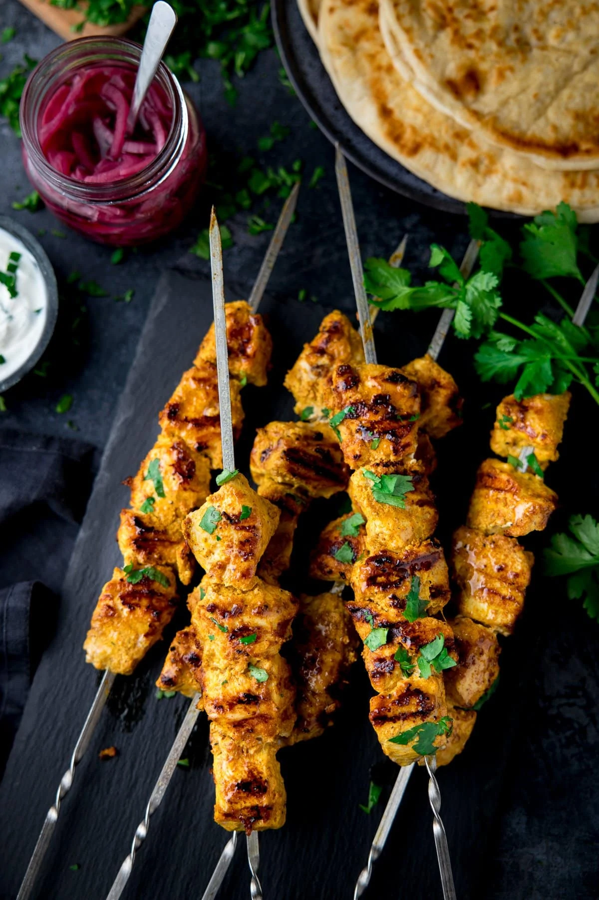

Chicken Tikka Masala

Here’s a list of ingredients for making Chicken Tikka Masala:
Ingredients:
For the Marinade:
- 1 lb (450g) boneless, skinless chicken thighs or breasts, cut into pieces
- 1 cup plain yogurt
- 2 tablespoons lemon juice
- 2 tablespoons ginger-garlic paste
- 1 teaspoon ground cumin
- 1 teaspoon ground coriander
- 1 teaspoon paprika
- 1 teaspoon ground turmeric
- 1 teaspoon garam masala
- 1/2 teaspoon chili powder
- Salt to taste
For the Sauce:
- 2 tablespoons vegetable oil or ghee
- 1 large onion, finely chopped
- 2 tablespoons ginger-garlic paste
- 1 can (14.5 oz) crushed tomatoes or tomato puree
- 1 cup heavy cream
- 1 teaspoon ground cumin
- 1 teaspoon ground coriander
- 1 teaspoon garam masala
- 1/2 teaspoon chili powder
- 1 tablespoon sugar (optional, to taste)
- Salt to taste
- Fresh cilantro, chopped (for garnish)
Instructions:
- Marinate the Chicken:
- In a bowl, combine yogurt, lemon juice, ginger-garlic paste, cumin, coriander, paprika, turmeric, garam masala, chili powder, and salt. Add chicken pieces and mix well. Marinate for at least 1 hour or overnight.
- Cook the Chicken:
- Preheat your grill, oven, or stovetop skillet. Cook the marinated chicken until fully cooked, with a slight char or browning. If grilling or broiling, cook for about 5-7 minutes per side. If using a stovetop skillet, cook over medium heat until done.
- Make the Sauce:
- In a large pan, heat the oil or ghee over medium heat. Add the chopped onion and cook until golden brown.
- Add the ginger-garlic paste and cook for 1-2 minutes.
- Stir in the crushed tomatoes and cook for 5-7 minutes until the mixture thickens.
- Add cumin, coriander, garam masala, chili powder, and salt. Mix well.
- Reduce heat and stir in the heavy cream and sugar (if using). Simmer for a few minutes.
- Combine Ingredients:
- Add the cooked chicken to the sauce and simmer for another 5-10 minutes to meld the flavors.
- Serve:
Garnish with fresh cilantro and serve with basmati rice or naan bread.